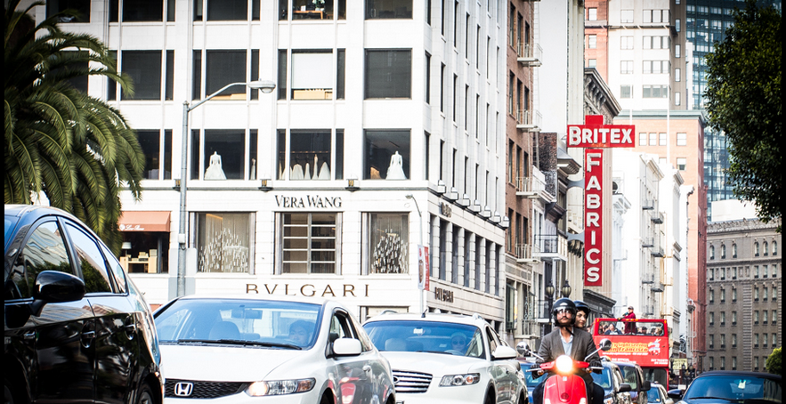

I'm Nooreen, a dedicated and aspiring software engineer currently studying at COMSATS University. My journey into the world of technology is unique — I began as a pre-medical student with dreams of becoming a doctor, but soon realized that my true passion lies in coding, designing, and building digital solutions. This transition has been both challenging and rewarding, and it has shaped me into a versatile learner with a strong determination to succeed in the tech industry.
I specialize in creating clean, elegant, and responsive websites using technologies like HTML, CSS, JavaScript, and WordPress. My approach combines technical knowledge with creative thinking to deliver web experiences that are both functional and aesthetically pleasing. I take pride in writing clean code, optimizing user experience, and ensuring cross-device compatibility.
Beyond technical skills, I bring a strong sense of communication, time management, and continuous improvement to every project. I am always eager to learn the latest tools and frameworks to stay ahead in the fast-evolving world of web development. My mission is simple: to help individuals and businesses grow online through purposeful, beautifully crafted digital solutions.
When I’m not coding, you’ll find me exploring design trends, learning about cybersecurity, or helping friends with their own websites. I believe that every website tells a story — and I’m here to help you tell yours.